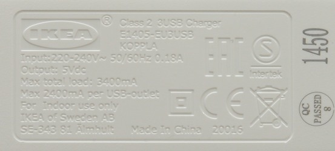
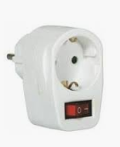
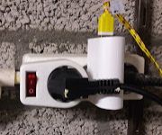

USB-Laders
26 April, 2019
21:57
Inleiding / samenvatting
Door een goede keuze van de juiste USB-lader kan niet alleen energie bespaard worden, maar ook de veiligheid voor personen worden verhoogd en het risico op brand worden verlaagd.
USB-laders zijn soms grote energieslurpers (zowel in rust als ook tijdens het gebruik ).
Als een USB-lader in rust veel energie gebruikt, is het vaak ook een apparaat met een hoog risico op ontploffen / ontbranden, immers het verbruik in rust wordt geheel in warmte omgezet. Tot nu toe heb ik nog geen brand gehad, wel zijn er de afgelopen 10 jaar 3 problemen geweest: 2 USB-laders inwendig ontploft, en 1 zelfs is opengebarsten (zonder verdere gevolgen).
Hoe weet ik of ik een goede of slechte USB-lader heb ?
Allereerst kun je kijken of je USB-lader hier getest is https://lygte-info.dk/info/ChargerIndex%20UK.html
Deze Deen, test USB-laders bijzonder grondig en geeft op basis van een groot aantal parameters een gefundeerd oordeel. Echter als je eens zoekt op de samsumg travel adapter, dan kom je er 5 fake adapters tegen die niet te onderscheiden zijn, maar volkomen onveilig zijn.
Een beperkt aantal USB-laders is inmiddels (veel mindergrondig) getest door de voedsel en waren authoriteiten: https://www.maxvandaag.nl/wp-content/uploads/2017/11/Factsheet-USB-laders-Onderzoek-elektrische-veiligheid-USB-laders-230-Volt.pdf (Meer dan de helft van de onderzochte USB-laders is naar aanleiding van dit onderzoek verboden omdat ze onveilig waren of omdat de veiligheid onvoldoende was aangetoond.
Er is een zogenaamd energielabel, waarbij in Europa de strengste normen worden gehanteerd (hoe hoger het nummer, hoe efficiënter de USB-lader) 
Er zijn er een aantal problemen, waarom dit niet echt werkt
- Het voorbeeld rechts is een relatief eenvoudige afbeelding, de meeste opschriften bevatten veel meer symbolen. (rechtsonder het V-symbool)
- Buiten Europa worden er van allerlei labels opgezet, zonder dat daar een grond voor is
- Zelfs het volgende nivo: VI is vergeleken met bijv de Ikea lader nog steeds erg onzuinig.
- Het is niet verplicht om het energieabel erop te zetten
- De Ikea lader, die veel zuiniger is dan nivo VI, maar geen opdruk heeft
- 
| 
En zelfs voor doorgewinterde technici is dit nauwelijks te volgen: https://www.digikey.com/en/articles/techzone/2015/aug/efficiency-standards-for-external-power-supplies |
Met een energiemeter kun je bekijken of het rustverbruik lager is dan 0.1 Watt Als dat het geval is wordt er in ieder geval weinig warmte ontwikkeld.
Als je over een IR camera beschikt, kun je kijken of er geen hotspots tijdens rust en in gebruik ontstaan.
Voor deskundigen is opslopen en kijken soms nog een optie.
Het is duidelijk dat de laatste methoden slechts op een beperkt aantal factoren iets zegt en bijvoorbeeld niets zegt over het gevaar om een gevaarlijke schok te krijgen bij de aanraking van een van de aansluitingen.
Hier een setje laders die ik inmiddels als "ongewenst" heb verklaard

Waar vind ik een goede lader ?
Lastige vraag, die we tot voor kort ook niet kon beantwoorden.
Inmiddels hebben we een goede USB-lader gevonden en zijn we alle laders in huis aan het vervangen.
Naast een hogere veiligheid, bespaart het nog iets !
Bij een kWh prijs van 0.23 Euro, hebben we de 3 USB-laders in iets meer dan 6 jaar terugverdiend.
Als we direct de juiste USB-laders hadden gekocht was dat waarschijnlijk slechts een jaar of 2 geweest.
Waar | Huidig Verbruik [W] | Nieuw Verbruik [W] | Besparing [Wh] | Besparing [Euro/jaar] | Terugverdientijd [Jaar] |
Fijnstof Sensor | 1.1 | 0.6 | 365*24*(1.1-0.6)=4,380 | 4.380*0.23=1.0074 | 7/1.0074=6.9486 |
Weerstation PIC | 0.37 | 0.28 | | | |
Brain Logger | 0.45-0.57 | 0.26-0.44 | | | |
Lader B | 0.25 | 0 | 365*24*(0.25)=2,190 | 2.19*0.23=0.5037 | 7/0.5037=13.8972 |
Raspi | 3.65 | 2.7 | 365*24*(3.65-2.7)=8,322.0 | 8.322*0.23=1.9141 | 7/1.9141=3.6571 |
Centraal Oplaadpunt | 0.18 | 0 | 365*24*(0.18)=1,576.8 | 1.5768*0.23=0.3627 | 7/0.3627=19.2997 |
Totaal Laders | | | 4.4+2.2+8.3+1.6=16.5 kWh | 16.5*0.23=3.795 | 28/(1+0.5+1.9+0.3)=7.5676 |
Indien het huidig verbruik geel gearceerd is, betreft het een apparaat dat continue in gebruik is. En met name bij die apparaten zie je een grote daling van het energieverbruik.
Op zich goed om eens alles na te lopen, want zo kom je ook andere sluipverbruikers tegen. Op een aantal plaatsen, zitten USB-laders die zelden of nooit gebruikt worden, hiervan hebben we besloten om daar onderstaande stekerschakelaar (kosten ongeveer 2 Euro) tussen te zetten
En hier het effect van het plaatsen van schakelaars, in de kolom Besparing zie je soms 365 dagen in het jaar (als het apparaat nauwelijks wordt gebruikt) en soms zie je 300 dagen, als het apparaat vaak wordt gebruikt (maar dan is die 300 dagen nog een onderschatting, oftewel de besparing zal in werkelijkheid groter zijn.
Waar | Huidig Verbruik [W] | Nieuw Verbruik [W] | Besparing [Wh] | Besparing [Euro/jaar] | Terugverdientijd [Jaar] |
Fietslader B | 0.78 | Schakelaar : 0 | 300*24*0.78=5,616 | 5.616*0.23=1.2917 | 2/1.2917=1.5483 |
Fietslader S | 0.27 | Schakelaar : 0 | 300*24*0.27=1,944.0 | 1.994*0.23=0.4586 | 2/0.4586=4.3611 |
Bed B | 0.4 | Schakelaar : 0 | 300*24*0.4=2,880 | 2.880*0.23=0.6624 | 2/0.6624=3.0193 |
Bed S | 0.4 | Schakelaar : 0 | 365*24*0.4=3,504 | 3.504*0.23=0.8059 | 2/0.8059=2.4817 |
Lader B | 0.25 | Schakelaar : 0 | 300*24*0.25=1,800 | 1.8*0.23=0.414 | 2/0.414=4.8309 |
Lader M | 0.08 | Schakelaar :0 | 365*24*0.08=700.8 | 0.7*0.23=0.161 | 2/0.23=8.6957 |
| | | | | |
Totaal Schakelaars | | | 5.6+1.9+2.9+3.5+1.8+0.7=16.4 kWh | 16.4*0.23=3.772 | 6*2/(3.7)=3.2432 |
 | Op de foto rechts 2 maatregelen op een wandcontactdoos, een Ikea lader en een schakelaar. Deze acties samen besparen jaarlijks 10000 Wh = 10 kWh aan stroom (uitgedrukt in Euro's 2.30) |  |
Analyse afgekeurde USB-laders
Hier de analyse van onze (af-)gekeurde USB laders die we voorlopig uit de roulatie hebben genomen
Created with Microsoft Office OneNote 2007
One place for all your notes and information